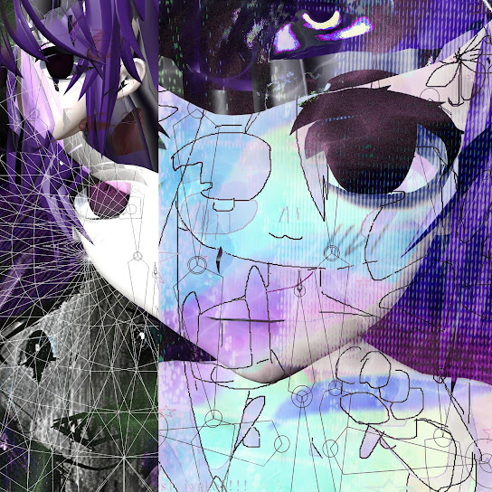

Breakcore
Sewerslvt 
Um single soltado no ano 2023 em plena guerra na ucrânia, em que os gritos representam a agonia
que a rory, uma ucraniâna nativa de kiev, está passando nesses ultimos meses.
Pessoalmente é minha música favorita e fico triste que seja somente um single e não um album,
o Amen Break padrão de breakcore como sempre presente porém com alguns hi-hats adicionais
e o padrão da rory, um sample de alguma voiceline de anime.
Nota: 9/10
Esse ep possui varias músicas incríveis pra época que foi lançado, porém uma se destaca, Da Da Is Tape To And U U U,
primeiro motivo sendo o título que não faz o menor sentido que acaba desperando a curiosidade,
segundo é o quão rápida é a música com aproximadamente 250bpm que a fez ficar bem famosa no eixo de jogos de ritmo
(Minha área XD).
É atualmente sua segunda música mais escutada e seu EP mais escutado.
Nota EP: 7/10
Nota Música destaque: 8/10
Outro single da inimiga do album que só solta poucas músicas de cada vez,
essa é atualmente sua música mais escutada e uma das mais recentes, tendo sido lançada no ínicio de 2023
ninguém realmente sabe do que se trata porém a própria rory já disse em seu twitter que suas músicas
são geralmente para expressar seus sentimentos no momento que as compõe, podemos apenas tentar advinhar
o que seja. De qualquer maneira, é uma ótima música com um ritmo mais lento se comparada com seus outros
trabalhos, e possui até um baixo que raramente é visto em outras tracks.
Nota: 8/10
O primeiro album do blog tem um peso especial pois foi o ultimo da carreia de Sewerslvt, uma mulher
transgênero australiana que é bastane famosa no meio dos jogos de ritmo e do breakcore. Esse album
é dedicado a sua namorada também uma mulher transgênero que cometeu suícidio no ano em que o album foi lançado
ao escutar o album você acompanha Sewerslvt em seu processo de luto, com cada música representando uma das fases
e como ela lidou com essa perda, minha favorita sendo all the joy in life was gone once you left, pois ao mesmo tempo
que é triste pois fala de alguém que não está mais presente, consegue trazer um tom mais leve para o album pois se trata
de relembrar os momentos bons que tiveram juntos, RIP Jvne.
Nota: 10/10
Masterpiece
Pode-se dizer que este foi o começo do fim para Jvnko (Nome alternativo de Sewerslvt), pois foi após este single
ganhar fama no tiktok que um público maior começou a segui-la e consequentemente descobrir seu passado na internet.
com a descoberta desse passado jvnko e sua namorada começaram a sofrer ataques que ao final acarretaram ao suicídio de sua conjuge.
Sobre a música, ela sampleia a abertura do anime Watamote onde a tomoko chora enquanto canta suas lamentações sobre ser
incapaz de fazer amigos e manter uma conversa, parte onde me identifico que me faz ter um carinho especial tanto pela música quanto pelo anime.
a capa mais famosa ilustra os personagens do mangá Don't Bully me nagatoro-san que foi posteriormente deletado por direitos autorais.
Após os ataques Jvnko apagou esta música de todas suas redes e tudo que sobraram foram reposts.
Nota: 9/10
Album MARAVILHOSO, de longe o melhor trabalho de Jvnko, esse album contém sua música mais famosa,
Mr. Kill Myself e duas outras incríveis, Ecificas e Lexapro Delirium. Começando por Lexapro Delirium, como alguém
que toma anti-depressivos, não necessáriamente o lexapro, consigo entender completamente a vibe que Jvnko tenta passar,
essa música fala comigo diretamente e me faz perceber que não estou sozinho nessas viagens de rivotril e outros remedios.
Ecificas tem o melhor drop de toda a carreira de Jvnko sincronizado com os gritos do Orel de Moral Orel, desenho que inclusivo
é muito bom uma pena terem cancelado. Ecifircas passa um sentimento de euforia misturado com raiva que todos ja sentimos uma vez
e pra nós neuro-divergentes é mais comum ainda. Não sou muito fã de Mr. Kill Myself pois não ressoa muio comigo porém consigo
entender a origem da fama, a batida é cativante e os synth são agradaveis aos ouvidos de quem não está acostumado com breakcore.
Nota: 10/10